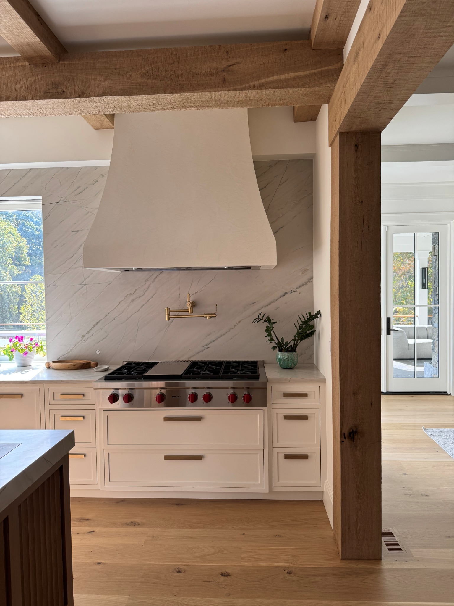
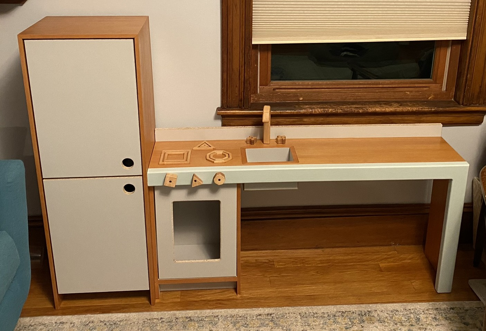
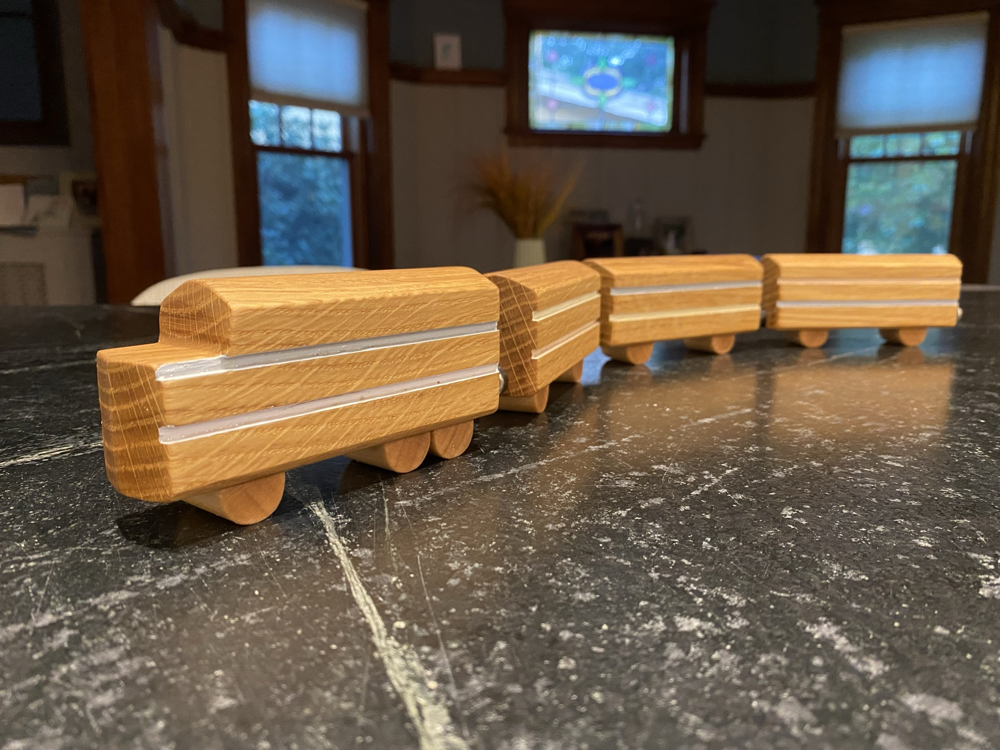
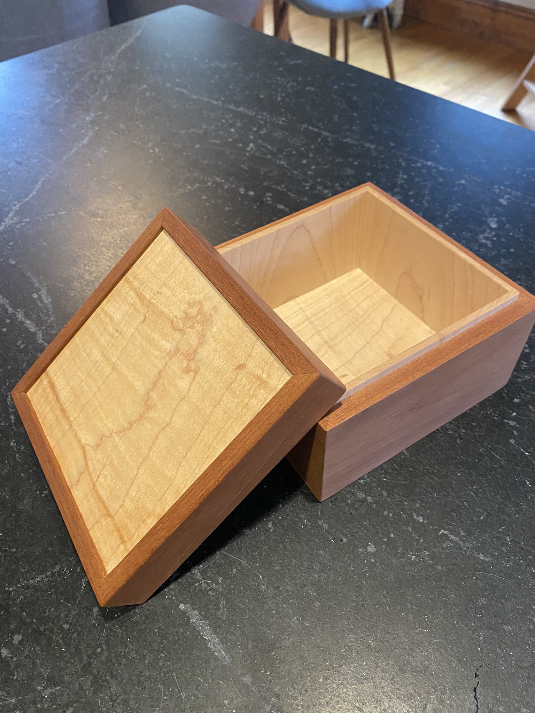

Custom cabinetry & architectural millwork
Johnston Fine Woodworking
Thoughtfully designed and precisely built for the home.
Selected workCabinetry made for the room.
Johnston Fine Woodworking creates custom cabinetry and architectural woodwork for residential interiors—from kitchens and bars to built-ins, dressing rooms, baths, and specialty storage.
Each project is developed with close attention to proportion, material, construction, and finish, with the goal of making new work feel considered, useful, and at home in the architecture around it.
Selected work
By room
Explore projects by category.
Larry Johnston
Owner & cabinetmaker
Larry Johnston grew up watching This Old House with his dad, an early introduction to the satisfaction of building things well. Trained as a mechanical engineer, he eventually found himself drawn toward work that was more tangible—work he could shape with his own hands.
He went on to study at The New England School of Architectural Woodworking before building his career at Kenyon Woodworking. After years of developing his craft there, Larry founded Johnston Fine Woodworking to bring that experience to projects of his own.
Outside the shop, Larry enjoys biking, just about any winter sport, and spending time with his family.
Just for fun
Personal projects
Toys, gifts, small objects, and one-off pieces Larry has made outside of work.
View the collection


Services
Custom cabinetry and millwork
Kitchens
Custom cabinetry designed around the room, the home, and how it is used.
Built-ins & Millwork
Libraries, bars, storage, paneling, and architectural details.
Vanities & Dressing Rooms
Tailored cabinetry with careful attention to proportion, material, and finish.
Design Collaboration
Coordination with homeowners, architects, designers, and builders from design through installation.
Selected press
Earlier work
Prior to founding Johnston Fine Woodworking, Larry Johnston contributed to projects at Kenyon Woodworking that were featured in Boston Magazine and The Boston Globe Magazine.
Contact
Discuss a project
For project inquiries, please get in touch.